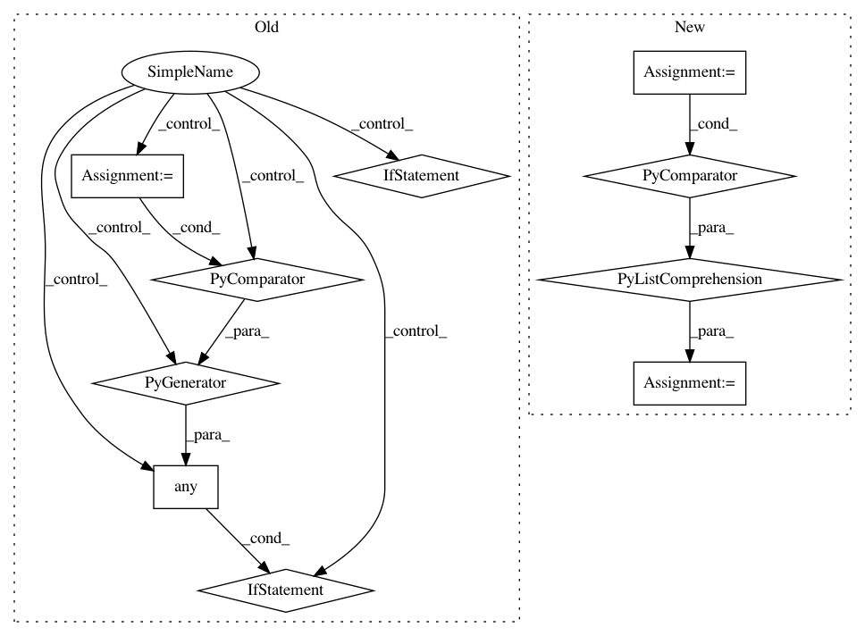

cafe7cc9cd3678163cf50ac554b723ce226f268f,src/bql.py,,_create_population,#Any#Any#,683
Before Change
if stattype == "numerical":
qt = sqlite3_quote_name(phrase.table)
cursor = bdb.sql_execute("SELECT %s FROM %s" % (var, qt))
rows = cursor.fetchall()
if any(isinstance(r[0], (unicode, str)) for r in rows):
numerical_string_vars.append(var)
if len(numerical_string_vars) > 0:
raise BQLError(
bdb, "Column(s) with string values modeled as numerical: %r"
% (numerical_string_vars, ))
After Change
pop_guess_vars = []
// Ensure no string-valued variables are being modeled as numerical.
numerical_string_vars = [
var for var, stattype in pop_model_vars
if stattype == "numerical"
and _column_contains_string(bdb, phrase.table, var)
]
if numerical_string_vars:
raise BQLError(bdb,
"Column(s) with string values modeled as numerical: %r"
% (numerical_string_vars, ))
In pattern: SUPERPATTERN
Frequency: 3
Non-data size: 10
Instances
Project Name: probcomp/bayeslite
Commit Name: cafe7cc9cd3678163cf50ac554b723ce226f268f
Time: 2017-02-04
Author: fsaad@mit.edu
File Name: src/bql.py
Class Name:
Method Name: _create_population
Project Name: allenai/allennlp
Commit Name: 40ec35876d38c4797ad3ee9bf911b019faa5a61d
Time: 2017-08-25
Author: mattg@allenai.org
File Name: allennlp/nn/initializers.py
Class Name: InitializerApplicator
Method Name: __call__
Project Name: quantumlib/Cirq
Commit Name: baddb11a55a68c29cdc319bc9dde6e0a24ad32fe
Time: 2020-12-08
Author: dabacon@gmail.com
File Name: cirq/ionq/serializer.py
Class Name: Serializer
Method Name: serialize